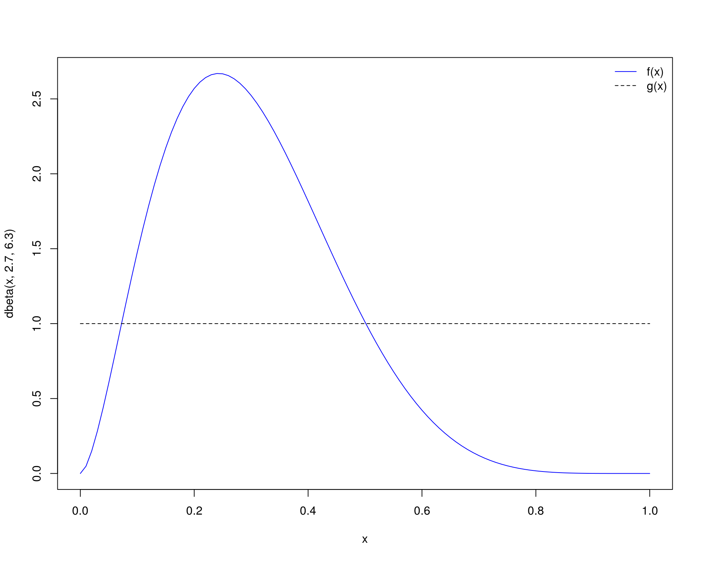

Métodos de Monte Carlo via Cadeias de Markov
Fernando P. Mayer
1 Introdução
Já vimos que a integração de Monte Carlo serve para aproximar integrais de alta dimensão ou que não possuem solução fechada (analítica).
Agora veremos que a integração de Monte Carlo, naturalmente serve também para o cáculo de probabilidades entre algum intervalo, e.g., \(P[a < X < b]\) ou \(P[X > a]\), que nada mais são do que cálculos de áreas no intervalo especificado.
A integração de Monte Carlo nos fornece uma estimativa dessa integral, e, como vimos, o erro padrão dessa estimativa pode ser calculado, e intervalos de confiança podem ser obtidos devido à suposição de que assintoticamente a estimativa possui distribuição normal.
Agora, veremos que podemos obter essa mesma estimativa, mas de uma forma um pouco diferente: simulando a própria distribuição de interesse, e obtendo valores de áreas (integrais) usando a própria amostra. A vantagem é que, dessa forma, obtemos uma descrição mais completa do problema em questão, e, com isso, podemos obter outras medidas que forem necessárias, de uma única vez. Além disso, medidas de incerteza como erros-padrões e intervalos de confiança podem ser derivados a partir da própria distribuição amostral.
A obtenção de uma amostra da distribuição de interesse será fundamental para os métodos de inferência que veremos mais adiante. Além disso, estes métodos são utilizados como o “padrão” para a resolução de problemas em inferência bayesiana.
2 Método não sequencial
2.1 Método de aceitação e rejeição
Se a função densidade de probabilidade for conhecida, \(f\), então é possível gerar números aleatórios dessa variável aleatória caracterizada por \(f\) pelo método da aceitação e rejeição. É necessário satisfazer dois requisitos:
- Ter um bom gerador de números uniformes.
- Ter um bom gerador de números de uma variável aleatória representada por uma distribuição \(D\), escolhida de tal maneira que existe uma constante \(M\) tal que a densidade de \(g\) que caracteriza a distribuição \(D\) satisfaz \[ f(x) \leq M g(x) \] para todo \(x\) do domínio de \(f\). A função \(g\) que “encapsula” a função \(f\) é chamada de distribuiçao proposta (proposal).
O seguinte algoritmo permite gerar números aleatórios de uma distribuição de probabilidade caracterizada pela função densidade \(f\):
- Gerar \(y\) como sendo uma ocorrência da variável aleatória representada por \(D\).
- Gerar \(u\) como sendo uma ocorrência de uma uniforme padrão.
- Se \[ u \leq \frac{f(y)}{M g(y)} \] considerar que \(x = y\) é um valor da distribuição de probabilidade alvo cuja densidade é \(f\), caso contrário, descartar \(y\).
- Repetir até atingir o número de valores desejado \(n\).
Veja que o valor de \(u\) é comparável com a razão \(f(y)/Mg(y)\), pois esta razão sempre será algum valor entre 0 e 1. Portanto o valor de \(u\) é sempre relativo à essa razão (i.e., não está na mesma escala das densidades de \(f\) e \(g\)).
Para determinar o valor de \(M\), basta seguir a seguinte relação
\[ M \geq \max_x \frac{f(x)}{g(x)} \]
Alguns pontos que devem ser levados em consideração:
- O limite \(f(x) \leq M g(x)\) não precisa ser tão pequeno. O algoritmo permanece válido (mas possivelmente menos eficiente) quando \(M\) for um valor maior
- A probabilidade de aceitação é \(1/M\). Portanto \(M\) deve ser o menor possível para maior eficiência computacional.
Para uma ilustração animada veja este exemplo da geração de números de uma distribuição normal, a partir de uma Cauchy (distribuição proposta). Para os detalhes da implementação veja este link.
2.1.1 Exemplo (Beta)
Considere que deseja-se gerar valores de uma distribuição \(\text{Beta}(\alpha = 2.7, \beta = 6.3)\) (e também suponha que não dispomos de um gerador como o que já existe no R pela função rbeta()).
A distribuição proposta mais natural seria uma Uniforme entre 0 e 1, que possui densidade 1 (para todo \(x\)).
curve(dbeta(x, 2.7, 6.3), from = 0, to = 1, col = 4)
curve(1 + 0 * x, from = 0, to = 1, add = TRUE, lty = 2)
legend("topright", legend = c("f(x)", "g(x)"),
lty = c(1, 2), col = c(4, 1), bty = "n")
Como podemos achar o valor de \(M\) que satisfaça \(f(x) \leq M g(x)\)? Já vimos que esse valor pode ser determinado por \[ M \geq \max_x \frac{f(x)}{g(x)} \] O valor máximo da densidade de \(g(x)\) é fácil de ser encontrado, pois nesse caso é 1 para todo \(x\). Como fazer então para determinar o valor máximo da \(\text{Beta}(2.7, 6.3)\)? Temos duas opções:
- Usar a expressão da moda da distribuição (se existir)
- Achar esse valor máximo por otimização numérica
No caso da distribuição Beta, existe uma expressão fechada para de determinar a moda, que é \(\frac{\alpha-1}{\alpha+\beta-2}\). Portanto seria fácil nesse caso determinar o valor máximo da densidade por meio de
## Define parâmetros
alfa <- 2.7; beta <- 6.3
## A moda é
(moda <- (alfa - 1)/(alfa + beta - 2))
# [1] 0.2428571
## A densidade nesse ponto é então
dbeta(moda, alfa, beta)
# [1] 2.669744No entanto, em diversas situações, não temos uma expressão fechada para a moda ou ela não pode ser determinada analiticamente. Por isso, nesses casos, podemos encontrar o valor máximo da função através de otimização numérica dessa função. Esse método serve para qualquer distribuição (na verdade qualquer função) onde deseja-se obter o ponto de máxima.
No R, podemos passar a função que desejamos maximizar para a função optimize(). Aqui usaremos a função dbeta() que já implementa a expressão de densidade da Beta, mas poderíamos também escrever essa função manualmente e usá-la na otimização.
(max.beta <- optimize(f = function(x) {dbeta(x, alfa, beta)/dunif(x)},
interval = c(0, 1), maximum = TRUE))
# $maximum
# [1] 0.2428608
#
# $objective
# [1] 2.669744Note que a função retorna dois valores: o ponto onde foi encontrada a densidade máxima (igual a moda), e o valor da densidade nesse ponto. Veja que os resultados são virtualmente os mesmos dos anteriores obtidos de forma analítica. Por ser uma forma mais geral, prosseguiremos com o valor de densidade máximo obtido dessa forma. Agora podemos então determinar o valor de \(M\), como sendo
Assim, ficamos com a distribuição proposta \(Mg(x)\) como pode ser visto abaixo.
curve(dbeta(x, alfa, beta), from = 0, to = 1, col = 4)
curve(1 + 0 * x, from = 0, to = 1, add = TRUE, lty = 2)
curve(M * 1 + 0 * x, add = TRUE, lty = 2, lwd = 2)
legend("right", legend = c("f(x)", "g(x)", "M g(x)"),
lty = c(1, 2, 2), col = c(4, 1, 1), lwd = c(1, 1, 2), bty = "n")Seguindo com o algoritmo de aceitação e rejeição, a ideia é a mesma do exemplo anterior, mudando as funções apropriadamente.
## Define funções
f <- function(x) dbeta(x, alfa, beta)
g <- function(x) 1 + 0 * x
## Simula com número fixo
Nsim <- 2500
## Amostra da proposta U(0,1)
y <- runif(Nsim)
## Amostra u também de U(0,1)
u <- runif(Nsim)
## Calcula a razão
r <- f(y)/(M * g(y))
## x serão os valores de y onde u < r
x <- y[u < r]
## Aceitados
ua <- u[u < r]
## Rejeitados
ur <- u[u >= r]Assim como no exemplo anterior, podemos visualizar os pontos amsotrados que foram aceitados e aqueles rejeitados.
curve(dbeta(x, alfa, beta), from = 0, to = 1, col = 4)
curve(M * 1 + 0 * x, from = 0, to = 1, add = TRUE, lty = 2, lwd = 2)
points(x, ua * M * g(x), col = 3)
points(y[u >= r], ur * M * g(y[u >= r]), col = 2)Lembre-se que a taxa de aceitação teórica é \(1/M\), e neste exemplo temos
## Quantos foram aceitados
length(x)/length(y)
# [1] 0.3572
## Taxa (teorica) de aceitacao é
1/M
# [1] 0.3745677Note pelo gráfico acima que a maior parte dos pontos amostrados não são aceitos (veja também a baixa taxa de aceitação). Isso mostra que estamos disperdisando a maior parte do tempo computacional amostrando pontos que não serão aceitos.
Devemos então pensar em uma outra distribuição proposta, com a intenção de melhorar (aumentar) a taxa de aceitação. Naturalmente, uma distribuição proposta com um formato mais próximo daquele que queremos amostrar seria possivelmente mais eficiente.
Considere então como uma nova distribuição proposta uma \(\text{Beta}(2, 6)\) (ainda queremos amostrar de uma \(\text{Beta}(2.7, 6.3)\)).
curve(dbeta(x, 2.7, 6.3), from = 0, to = 1, col = 4, ylim = c(0, 3))
curve(dbeta(x, 2, 6), from = 0, to = 1, add = TRUE, lty = 2)
legend("topright", legend = c("f(x)", "g(x)"),
lty = c(1, 2), col = c(4, 1), bty = "n")Com o formato mais próximo da proposta, certamente a taxa de aceitação será maior. Precisamos novamente encontrar o valor \(M\) que satisfaça \(f(x) \leq M g(x)\). Já vimos que podemos usar a moda, mas vamos usar o método geral de encontrar a densidade máxima das duas distribuições por otimização numérica. Aqui também temos duas opções:
- Encontrar o máximo de cada função separadamente e fazer a razão entre eles
- Encontrar diretamente o máxima da razão entre as duas distribuições
A segunda abordagem é mais direta e levará ao mesmo resultado da primeira, mas só precisaremos fazer uma otimização. Portanto prosseguimos com
(M <- optimize(f = function(x) {dbeta(x, 2.7, 6.3)/dbeta(x, 2, 6)},
interval = c(0, 1), maximum = TRUE)$objective)
# [1] 1.671808Note que esse já é o valor de \(M\), e ficamos com a seguinte situação
curve(dbeta(x, 2.7, 6.3), from = 0, to = 1, col = 4, ylim = c(0, 5))
curve(dbeta(x, 2, 6), from = 0, to = 1, add = TRUE, lty = 2)
curve(M * dbeta(x, 2, 6), add = TRUE, lty = 2, lwd = 2)
legend("topright", legend = c("f(x)", "g(x)", "M g(x)"),
lty = c(1, 2, 2), col = c(4, 1, 1), lwd = c(1, 1, 2), bty = "n")Agora fazemos o mesmo processo para um número fixo de simulações
## Define funções
f <- function(x) dbeta(x, 2.7, 6.3)
g <- function(x) dbeta(x, 2, 6)
## Simula
Nsim <- 2500
## Amostra da proposta
y <- rbeta(Nsim, 2, 6)
## Amostra da U(0,1)
u <- runif(Nsim)
r <- f(y)/(M * g(y))
x <- y[u < r]
ua <- u[u < r]
ur <- u[u >= r]O resultado dos pontos aceitados agora pode ser visto abaixo.
curve(dbeta(x, 2.7, 6.3), from = 0, to = 1, col = 4, ylim = c(0, 5))
curve(M * dbeta(x, 2, 6), from = 0, to = 1, add = TRUE, lty = 2, lwd = 2)
points(x, ua * M * g(x), col = 3)
points(y[u >= r], ur * M * g(y[u >= r]), col = 2)Veja que muitos mais pontos agora são aceitos. De fato, a taxa de aceitação usando essa nova distribuição proposta é bem maior quando comparada à taxa anterior com a uniforme como proposta.
## Quantos foram aceitados
length(x)/length(y)
# [1] 0.5756
## Taxa (teorica) de aceitacao é
1/M
# [1] 0.5981549Novamente, podemos verificar a distribuição da amostra gerada através de um histograma, e (preferencialmente), através das distribuições acumuladas empírica e teórica.
3 Métodos sequenciais
Em situações em que \(\theta\) (ou \(X\)) tem dimensão elevada, o procedimento a ser apresentado é geralmente mais eficiente para gerar quantidades aleatórias.
O ponto crítico do método MCMC está na formulação de probabilidades de transição apropriadas. O algoritmo de Metropolis-Hastings é uma forma conveniente de obter uma amostra simulada, a partir do uso de uma cadeia de Markov generalizada para um espaço de estado contínuo.
Segue abaixo uma descrição das probabilidades de transição especificadas conforme algumas das alternativas que podem ser adotadas para implementar o algoritmo de Metropolis-Hastings.
O procedimento mais geral será visto na sequência.
3.1 Metropolis-Hastings
O algoritmo de Metropolis-Hastings gera uma cadeia de Markov \(\{X_0, X_1, \ldots\}\) conforme definido abaixo.
- Defina uma distribuição proposta \(g(\cdot|X_t)\)
- Defina um valor inicial \(X_0\), dentro do domínio de \(g\)
- Repita os seguintes passos até convergir para uma distribuição estacionária:
- Gere um valor candidato \(Y=X_{t+1}\) a partir de \(g(\cdot|X_t)\) (note que o valor candidato é dependente do valor anterior)
- Gere \(U\) de uma \(\text{U}(0,1)\)
- Calcule a taxa de aceitação \[ \alpha(X_t, Y) = \min \left( \frac{f(Y)g(X_t|Y)}{f(X_t)g(Y|X_t)}, 1 \right) \] Se \[ U \leq \alpha(X_t, Y) \] aceite \(Y\) e faça \(X_{t+1}=Y\); caso contrário faça \(X_{t+1}=X_t\)
Observações:
- Note que só precisamos conhecer o núcleo da densidade alvo \(f\), ou seja, não é necessário saber a constante de integração (ou de normalização), uma vez que, mesmo sem essa constante, a densidade de \(f\) será proporcional.
- Se a distribuição proposta for adequada, a “cadeia” de Metropolis-Hastings irá convergir para uma distribuição estacionária única \(\pi\).
- O algoritmo foi desenvolvido de forma que a distribuição estacionária da cadeia é de fato a distribuição alvo \(f\).
3.2 Metropolis Random Walk
O algoritmo de Metropolis-Hastings é uma generalização do algoritmo de Metropolis random walk. Nesse caso, a particularização é que no algoritmo de Metropolis, a distribuição proposta deve ser obrigatoriamente simétrica.
Sendo assim, se \(g(\cdot|X_t)\) é simétrica, podemos dizer que
\[ g(X_t|Y) = g(Y|X_t) \]
Portanto, a taxa de aceitação fica agora simplificada
\[ \begin{aligned} \alpha(X_t, Y) &= \min \left( \frac{f(Y)g(X_t|Y)}{f(X_t)g(Y|X_t)}, 1 \right) \\ &= \min \left( \frac{f(Y)}{f(X_t)}, 1 \right) \end{aligned} \]
Sendo assim, se um valor candidato \(Y = X_{t+1}\) é gerado a partir de uma distribuição proposta simétrica, então a probabilidade da cadeia se mover de \(X_t\) para \(X_{t+1}\) depende apenas da distância entre eles, i.e. \(g(X_{t+1}|X_t) = g(|X_{t+1} - X_t|)\). Então, a cada iteração, um increment \(Z\) é gerado a partir de \(g(\cdot)\), e \(Y\) é definido como \(Y = X_t + Z\) (veja que é a própria definição de random walk).
O incremento aleatório \(Z\) pode ser, por exemplo, normal com média zero, de forma que o valor candidadto é \(Y|X_t \sim \text{N}(X_t, \sigma^2)\), para algum \(\sigma^2 > 0\) constante. No enatnto, o incremento \(Z\) também pode ser proveniente de uma distribuição uniforme no intervalo \((-\delta, \delta)\), por exemplo.
Assim, o algoritmo de Metropolis random walk pode ser definido da seguinte forma:
- Defina uma distribuição proposta \(g\) simétrica
- Defina um valor inicial \(X_0\), dentro do domínio de \(f\)
- Repita os seguintes passos até convergir para uma distribuição estacionária:
- Gere um valor candidato \(Y \equiv X_{t+1} = X_t+Z\)
- Gere \(U\) de uma \(\text{U}(0,1)\)
- Calcule a taxa de aceitação \[ \alpha(X_t, Y) = \min \left( \frac{f(Y)}{f(X_t)}, 1 \right) \] Se \[ U \leq \alpha(X_t, Y) \] aceite \(Y\) e faça \(X_{t+1}=Y\); caso contrário faça \(X_{t+1}=X_t\)
3.2.1 Exemplo com uniforme
Suponha que se deseja gerar valores de uma normal padrão, usando como distribuição proposta uma \(\text{U}(-\delta, \delta)\).
- Simule \(z \sim \text{U}(-\delta, \delta)\) e faça \(Y = X_t+Z\)
- Calcule a probabilidade de aceitação \(\alpha(X_t, Y) = \min \left( \frac{f(Y)}{f(X_t)}, 1 \right)\), onde \(f\) é a densidade da normal padrão
- Simule \(u \sim \text{U}(0,1)\). Se \(u \leq \alpha(X_t, Y)\), então \(X_{t+1}=Y\); caso contrário \(X_{t+1}=X_t\)
f <- function(x) dnorm(x, 0, 1)
delta <- 0.5
N <- 500
x <- numeric(N)
x[1] <- 0
set.seed(2019-10-11)
for(i in 2:N) {
z <- runif(1, -delta, delta)
y <- x[i - 1] + z
alpha <- min(f(y)/f(x[i - 1]), 1)
u <- runif(1)
if(u <= alpha) {
x[i] <- y
} else {
x[i] <- x[i - 1]
}
}
plot(x, type = "l")Veja o que acontece se aumentarmos o valor de \(\delta\)
f <- function(x) dnorm(x, 0, 1)
delta <- 2
N <- 500
x2 <- numeric(N)
x2[1] <- 0
set.seed(2019-10-11)
for(i in 2:N) {
z <- runif(1, -delta, delta)
y <- x2[i - 1] + z
alpha <- min(f(y)/f(x2[i - 1]), 1)
u <- runif(1)
if(u <= alpha) {
x2[i] <- y
} else {
x2[i] <- x2[i - 1]
}
}
plot(x2, type = "l")Compara a distribuição das amostras com a distribuição teórica
par(mfrow = c(1, 2))
plot(ecdf(x))
curve(pnorm(x), add = TRUE, col = 2)
plot(ecdf(x2))
curve(pnorm(x), add = TRUE, col = 2)
par(mfrow = c(1, 1))
Comparando as duas cadeias
par(mfrow = c(2, 1))
plot(x, type = "l", main = expression(delta == 0.5))
plot(x2, type = "l", main = expression(delta == 2))
par(mfrow = c(1, 1))
No primeiro caso, os valores propostos ficam muito próximos do valor atual, e quase sempre serão aceitos. No entanto, levará muitas iterações até o algoritmo cobrir todo o espaço de \(X\).
No segundo caso, a taxa de rejeição é excessivamente alta e a cadeia se movimenta muito pouco, pois os valores propostos podem ficar muito longe do atual.
Nas duas situações o algoritmo pode ser ineficiente. Na prática temos que testar vários valores de \(\delta\) e monitorar a taxa de aceitação. A partir disso surge um importante conceito em amostradores MCMC: tuning, ou “refinamento”. Em teoria, não existe um valor ideal para \(\delta\), ambas as cadeias irão eventualmente convergir para a distribuição alvo (normal nesse caso). No entanto, a velocidade de convergência e a quantidade de espaço amostral explorado dependem de \(\delta\). Portanto, o amostrador pode ser refinado para melhorar sua eficiência.
Veja também que no primeiro caso, como os valores propostos são mais próximos do atual, eles também terão uma correlação maior.
Veja como fica uma animação com o método em funcionamento:
VEJA também o código-fonte para outro exemplo!
3.2.2 Exemplo com normal
Considere gerar valores de uma distribuição \(t\) de Student com \(\nu\) graus de liberdade, usando como distribuição proposta uma \(\text{N}(X_t, \sigma)\).
rw.Metropolis <- function(nu, sigma, x0, N) {
f <- function(x, nu) dt(x, nu)
x <- numeric(N)
x[1] <- x0
u <- runif(N)
for(i in 2:N) {
z <- rnorm(1, mean = 0, sd = sigma)
y <- x[i - 1] + z
alpha <- min(f(y, nu)/f(x[i - 1], nu), 1)
u <- runif(1)
if(u <= alpha) {
x[i] <- y
} else {
x[i] <- x[i - 1]
}
}
return(x)
}Supondo que queremos gerar uma distribuição \(t(\nu = 4)\). Vamos fazer isso com valores diferentes de \(\sigma\) da distribuição normal proposta.
nu <- 4
N <- 2000
sigma <- c(.05, .5, 2, 16)
x0 <- 25
rw1 <- rw.Metropolis(nu, sigma[1], x0, N)
rw2 <- rw.Metropolis(nu, sigma[2], x0, N)
rw3 <- rw.Metropolis(nu, sigma[3], x0, N)
rw4 <- rw.Metropolis(nu, sigma[4], x0, N)
## Resultado das cadeias
par(mfrow = c(2, 2))
refline <- qt(c(.025, .975), df = nu)
rw <- cbind(rw1, rw2, rw3, rw4)
for (j in 1:4) {
plot(rw[, j], type = "l",
main = bquote(sigma == .(round(sigma[j], 3))),
ylab = "X", ylim = range(rw[, j]))
abline(h = refline)
}
par(mfrow = c(1, 1))- Com \(\sigma = 0.05\) a probabilidade de aceitação \(\alpha\) tende a ser grande, portanto quase todos os valores candidatos são aceitos. Os incrementos são pequenos e a cadeia não converge para a distribuição estacionária.
- Com \(\sigma = 0.5\), converge lentamente para a distribuição estacionária. Isso mostra que é importante definir um período de burn-in ou aquecimento da cadeia, descartando os primeiros valores gerados.
- Com \(\sigma = 2\), a cadeia possui uma boa mistura e converge rapidamente para a distribuição estacionária.
- Com \(\sigma = 16\), a probabilidade de aceitação \(\alpha\) é pequena, e a maioria dos valores candidatos são rejeitados. A cadeia converge, mas é ineficiente.
3.3 Amostrador independente
Outro caso particular do método geral de Metropolis-Hastings é o chamado amostrador independente. Nesse caso, a particularidade é que a distribuição proposta não depende mais de valores anteriores da cadeia, ou seja,
\[ g(Y|X_t) = g(Y) \]
Dessa forma, a probabilidade de aceitação simplifica para
\[ \begin{aligned} \alpha(X_t, Y) &= \min \left( \frac{f(Y)g(X_t|Y)}{f(X_t)g(Y|X_t)}, 1 \right) \\ &= \min \left( \frac{f(Y)g(X_t)}{f(X_t)g(Y)}, 1 \right) \\ &= \min \left( \frac{f(Y)}{f(X_t)} \bigg/ \frac{g(Y)}{g(X_t)}, 1 \right) \end{aligned} \]
Note que, embora os valores de \(Y=X_{t+1}\) sejam gerados de forma independente, a cadeia resultante não será iid, já que a probabilidade de aceitação ainda depende de \(X_t\).
O amostrador independente é de fácil implementação, mas tende a funcionar bem apenas quando a distribuição proposta é parecida (em forma) com a distribuição alvo.
Assim, o método do amostrador independente pode ser definido da seguinte forma:
- Defina uma distribuição proposta \(g\) similar à distribuição alvo
- Defina um valor inicial \(X_0\), dentro do domínio de \(g\)
- Repita os seguintes passos até convergir para uma distribuição estacionária:
- Gere um valor candidato \(Y\) a partir de \(g\)
- Gere \(U\) de uma \(\text{U}(0,1)\)
- Calcule a taxa de aceitação \[ \alpha(X_t, Y) = \min \left( \frac{f(Y)g(X_t)}{f(X_t)g(Y)}, 1 \right) \] Se \[ U \leq \alpha(X_t, Y) \] aceite \(Y\) e faça \(X_{t+1}=Y\); caso contrário faça \(X_{t+1}=X_t\)
3.3.1 Exemplo (beta)
## Gerar números de uma distribuição Beta usando a distribuição Uniforme
## e/ou normal.
## Distribuição alvo: X ~ Beta(2, 3)
f <- function(x) dbeta(x, shape1 = 2, shape2 = 3)
curve(f, 0, 1)
## Distribuição candidata (proposal): X ~ Uniforme(0,1)
g <- function(x) dunif(x, 0, 1)
## Gráfico das densidados sobrepostas.
curve(f, 0, 1)
curve(g, add=TRUE, col=2)
legend("topright", legend=c("Alvo", "Candidata"), lty=1, col=1:2,
bty="n")
N <- 500
x <- numeric(N)
x[1] <- 0.5
set.seed(2019-10-11)
for(i in 2:N) {
y <- runif(1) # Distribuição proposta
alpha <- min((f(y) * g(x[i - 1])) / (f(x[i - 1]) * g(y)), 1)
u <- runif(1)
if(u <= alpha) {
x[i] <- y
} else {
x[i] <- x[i - 1]
}
}
## Cadeia
plot(x, type = "l")Veja como fica uma animação com o método em funcionamento:
Outro exemplo:
## Distribuição alvo: X ~ Beta(2, 3)
f <- function(x) dbeta(x, shape1 = 2, shape2 = 3)
curve(f, 0, 1)
## Distribuição candidata (proposal): X ~ Normal(0.5, 0.25)
g <- function(x) dnorm(x, 0.5, 0.25)
## Gráfico das densidados sobrepostas.
curve(f, 0, 1)
curve(g, add=TRUE, col=2)
legend("topright", legend=c("Alvo", "Candidata"), lty=1, col=1:2,
bty="n")
N <- 500
x2 <- numeric(N)
x2[1] <- 0.5
set.seed(2019-10-11)
for(i in 2:N) {
y <- rnorm(1, 0.5, 0.25) # Distribuição proposta
alpha <- min((f(y) * g(x2[i - 1])) / (f(x2[i - 1]) * g(y)), 1)
u <- runif(1)
if(u <= alpha) {
x2[i] <- y
} else {
x2[i] <- x2[i - 1]
}
}
## Cadeia
plot(x2, type = "l")Veja como fica uma animação com o método em funcionamento:
Comparando as cadeias geradas com as duas diferentes propostas:
VEJA também o código-fonte para outro exemplo!

Este conteúdo está disponível por meio da Licença Creative Commons 4.0